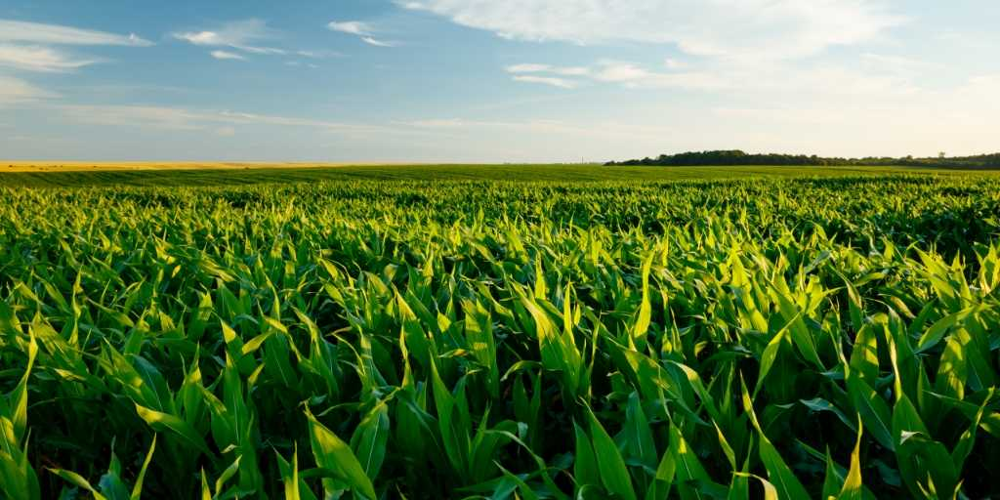
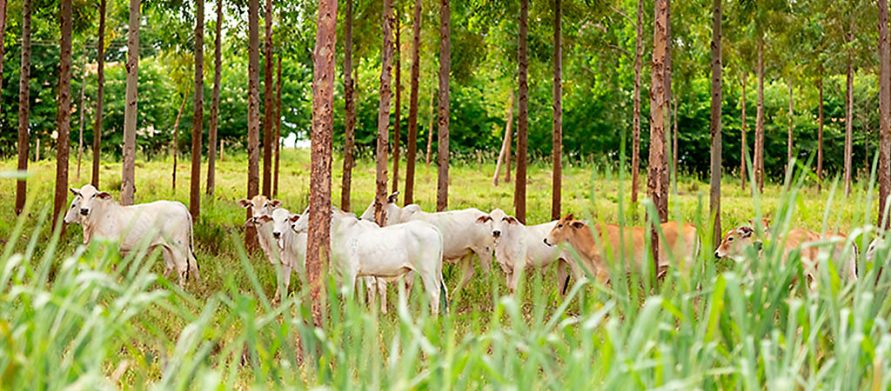
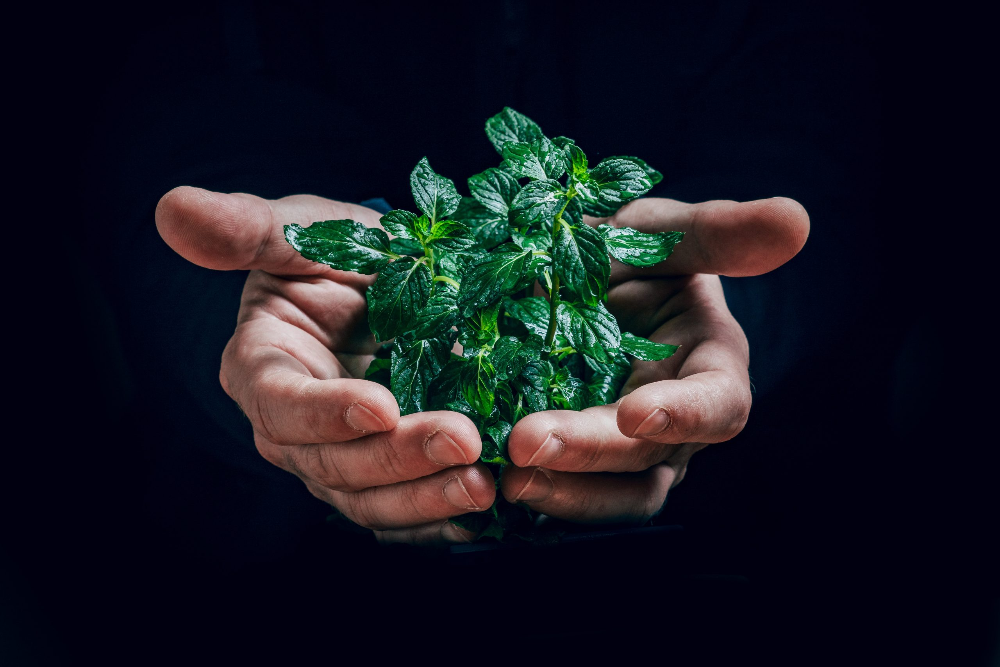

Recursos biológicos
Recursos biológicos são todos os organismos vivos e os materiais derivados deles que possuem valor econômico, ecológico ou social. Eles desempenham um papel crucial em vários aspectos da vida humana e do meio ambiente. Vamos explorar esses recursos com mais detalhes:
Tipos de Recursos Biológicos
Recursos Vegetais:
Agricultura: Inclui culturas alimentares como trigo, arroz, milho e frutas. Também abrange plantas não alimentares como algodão, madeira e plantas medicinais.
Florestas: Fornecem madeira, papel e produtos não madeireiros como resinas, látex e plantas medicinais.
Biocombustíveis: Plantas como cana-de-açúcar e milho são usadas para produzir etanol e biodiesel.
Recursos Animais
Pecuária: Inclui gado bovino, suínos, ovinos, aves e produtos derivados como leite, carne e ovos.
Pesca e Aquicultura: Peixes, mariscos e outros organismos aquáticos usados na alimentação e na indústria.
Microorganismos:
Bactérias e Fungos: Utilizados na produção de antibióticos, na fermentação de alimentos (como queijos e vinhos) e na biotecnologia.
Algas: Usadas na produção de suplementos alimentares, biocombustíveis e como matéria-prima em biotecnologia.
Importância dos Recursos Biológicos
Econômica:
Contribuem para a economia global através da agricultura, silvicultura, pesca e biotecnologia. São a base para indústrias como farmacêutica, alimentícia, têxtil e de energia renovável.
Ecológica:
Mantêm a biodiversidade e o equilíbrio dos ecossistemas. Ciclam nutrientes, purificam a água e o ar, e fornecem habitats para inúmeras espécies.
Social:
São essenciais para a alimentação, saúde e bem-estar humano. Possuem valor cultural e tradicional em muitas comunidades, especialmente as indígenas e rurais.
